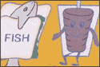

1
Computer Virus Myths
http://kumite.com/myths/
About once a month, someone distributes an interoffice e-mail about a dreaded computer virus that's threatening to destroy our hard drives. If you're as sick as we are about hearing these ominous warnings, get the straight dope about computer viruses by visiting this magnificent site. Ron Rosenberger, an internationally recognized virus expert, has compiled a storehouse of virus information, which basically debunks every story you've ever heard about viruses, including the oft-repeated "Good Times" hoax and this year's flavor, the Hare virus. While we're still not ready to disable Norton on our computers, after poring over all the goods at this site, we feel a lot safer about downloading mysterious files from the Net.
suck
http://www.suck.com
In a little over a year, suck has evolved from a clandestine site put up by two Hotwired staffers in their limited free time to a full-blown commercial site owned by Hotwired...with actual paid employees! What hasn't changed, despite the increased budget, are the daily doses of cynical, subversive and snide commentary--while not always on the mark, when they do hit their target, they hit hard. The new-and-improved suck also doubles your pleasure with rotating regular features like "Zero Baud," a weekly essay on the unplugged and "net.moguls," hilariously rendered virtual trading cards of Net tycoons. This is one of the more obvious choices in our Top Ten, but we admire the way that the sucksters have been able to maintain their indie cred despite selling out to the man.
The Abandoned Missile Base VR Tour
http://www.xvt.com/users/kevink/silo/silo.html
Love to explore dangerous and forbidden places, but hate the prospect of grave bodily harm or breaking federal laws? Let Kevin Kelm and Dave Rodenbaugh do it for you, then. Through the pair's photos and narrative, you can take a virtual tour of an entire abandoned missile complex. Investigate the base, tunnel by tunnel, walking past corridors of graffiti-strewn concrete, bent rusted metal and forbidding pools of murky water. Even though the base is decommissioned and completely deserted, there's something oddly captivating about the site--as if just around the next corner you're going to stumble upon the evidence of secret alien experiments or some other Mulderesque discovery.
Church of the SubGenius
http://sunsite.unc.edu/subgenius/
For those who live a life of slack, or desire to, it's time to introduce yourself to "Bob." Who is "Bob?" He is the devout headman of the Church of the SubGenius, a cult of slack, "a bogus religion that...condone[s] superior degeneracy." What will you find within this Church's walls? Photo essays on LEGO monsters, rants on slackdom, the Stark Fist of Removal, bizarre video downloads, an invitation to sing along with "Bob" until your throat bleeds and assorted items of sacrilege. The Church and its twisted page is over a thousand followers strong and still growing. Praise "Bob!"
WWWF Grudgematch
http://www.cheme.cornell.edu/~slevine/
Sit ringside and watch the greatest bouts of our time: Mr. T versus Mr. Clean, King Midas versus the Grim Reaper and a Rottweiler versus a Rottweiler's weight in Chihuahuas. At the WWWF, almost anyone and anything can duke it out. While it might seem that this page's gimmicky idea would fade fast, it just manages to get cleverer and cleverer with time. Netizens count the punches and make their vote (the best entry explanations are also posted to the site). We're still waiting for Space Ghost versus Thundarr the Barbarian.
Blue Dot
http://www.razorfish.com/bluedot
The Web is crawling with e-zines and artist collectives, so what makes Blue Dot so special? This medley of poetry, art, articles, photography and just about any other artistic medium that can be expressed in binary code, is the electronic equivalent of Rudolph, that reindeer, leading others with his glowing nose. Blue Dot is never predictable and is always entertaining. New York-based Razorfish online production house is responsible for this site that introduces itself as, "ever evolving converging growing changing slipping dripping interacting jamming experiencing rocking feeling expanding sliding wandering ingesting snoozing enjoying hunting vibrating pushing gathering absorbing rotating pulling breathing." We experience all but snoozing every time we visit this site.
Mad Science
http://www.ftech.net/%7Emadsite/index.shtml
Intrigued by the wasp consciousness? Wondering, can men be lesbians? Ever thought about the "Meaning Of The Concept Ultimate In The Phrase Ultimate Weapon?" Us too. The 1st International Conference on Mad Science Web site inspired us from the get-go. Imagine a cyberseminar discussing and presenting researched papers about those "Darkly powerful pseudosciences and dangerous technologies which fall beyond the scope of conventional science and good taste." Perhaps we were wooed by the concept of mad scientists being able to freely present details of their research in front of a global audience; maybe we became smitten by the gratuitous amount of alien information found on the site. In any case, this annual Web event is one you won't want to miss the opportunity to participate in.
IUMA
http://www.iuma.com
The Internet Underground Music Archive has remained a faithful favorite of the Internet Underground staff throughout the year despite their name, which is, of course, all too similar to our own. With RealAudio clips of over 800 musical artists covering every genre from indie to surf to a cappella, the site is a treasure trove of undiscovered and underground bands getting exposure to the most diverse audience in existence--Net users. This no-middleman method of getting to the listener may be the working model of the future for the music industry, and the site is always good for browsing, stuffed as it is to the brim with creative projects and songs.
John Labovitz's E-Zine List
http://www.meer.net/~johnl/e-zine-list/index.html
 The E-Zine List continues to delight us every time we revisit it. Currently cataloging over 1,300 zines, distributed through the Web, Gopher, FTP, e-mail, and such, it reigns supreme as a starting point from which to sally forth and savor Net-users' stabs at creative edit-and-art projects. John himself notes that zines are "done often for fun or personal reasons, and tend to be irreverent, bizarre and/or esoteric." The E-Zine List just gets bigger and better every month; our favorite new innovation is the list of "most obscure keywords," which will hurtle you to some decidedly strange literary destinations.
The E-Zine List continues to delight us every time we revisit it. Currently cataloging over 1,300 zines, distributed through the Web, Gopher, FTP, e-mail, and such, it reigns supreme as a starting point from which to sally forth and savor Net-users' stabs at creative edit-and-art projects. John himself notes that zines are "done often for fun or personal reasons, and tend to be irreverent, bizarre and/or esoteric." The E-Zine List just gets bigger and better every month; our favorite new innovation is the list of "most obscure keywords," which will hurtle you to some decidedly strange literary destinations.
Interesting Ideas
http://www.mcs.com/~billsw/home.html
 The Net is littered with lousy home pages, so when someone actually takes their personal chunk of cyberspace and produces compelling content, the site sticks out like a funny joke on Caroline in the City. One such home page of note that we stumbled upon this past year is Bill Swislow's Interesting Ideas, a collection of his intriguing musings on pop culture icons like Don Knotts, Nancy, root beer and his photos of roadside art. Not to be missed is the Gyros Project, a loving tribute to the hand-painted gyro signs found at hot dog stands, pizza parlors and Greek fast-food joints.